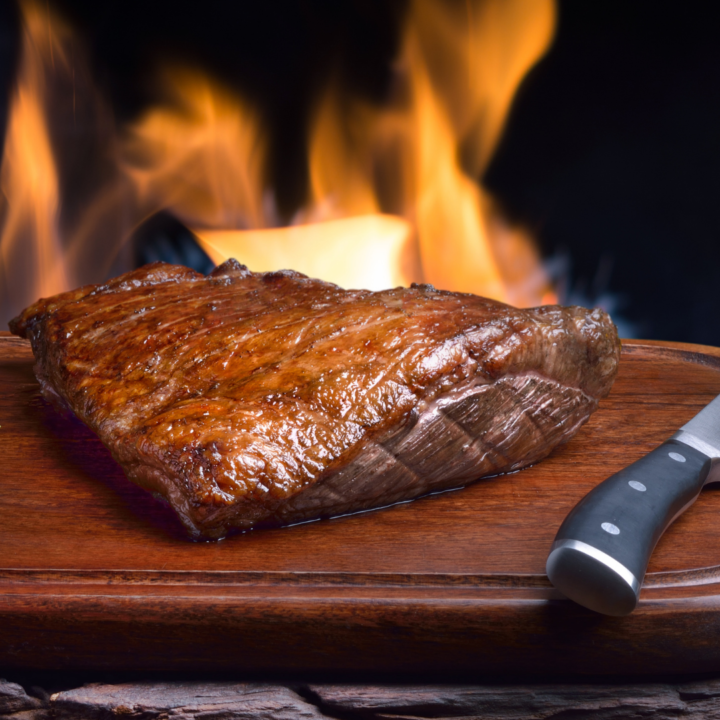

Brazlian BBQ Picanha Recipe

Story
I was introduced to this cut of meat a few years ago by a Brazilian friend. Once I tried it for myself, I was
blown away by the incredibe flavor and from then on, this became my favourite cut of meat to BBQ...no...my
favourite cut of meat. Period. The juices from the fat cap run into the meat, giving it a succulent, tender
flavour filled experience! But whats amazing is it's so simple! So let me give you the recipe so you can cook for others!
Ingredients
- Picanha beef cut (top sirloin cap/beef rump cap)
Steps
1. Bring BBQ to 500F (aiming for a searing temperature - you can go even hotter!)
2. Take the picanha out of the packaging and pat dry and trim edges
3. Salt the exterior patting the salt into the meat and leave for 30 minutes (this allows the salt to absorb into the meat
4. Sear all sides of the Picanha flipping every minute, avoiding flare ups from the fat. We are looking for a dark brown charcoal colour all round
5. Take the meat off the heat, and cut into 1"-2" steaks (based on preference) against the grain of the meat
6. Put the steaks back on the grill, salting the topside of the steak
7. Grill for 7 minutes before flipping and grilling for a further 5 minutes
8. Remove and rest for 5-10 minutes
9. Slice steaks finely at 45 degrees. Serve and enjoy!